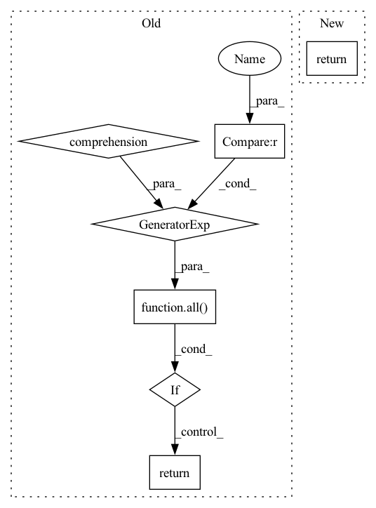

Pattern ID :5013
Before Change
print(f"Not Improving | Oldest Loss Median: {self.loss_medians[0]:9.6f} - "
f"Current Loss Median: {self.loss_medians[-1]:9.6f}")
return True
if all(loss > (self.loss_medians[-1] * es.maximum_spike_size)
for loss in self.losses[-es.maximum_spike_duration // self.device_steps:]) :
print(f"Spiking | Loss Median: {self.loss_medians[-1]:9.6f} - "
f"Last Losses: {self.losses[-es.maximum_spike_duration // self.device_steps:]}")
return True
return False
After Change
"Optimizer/Beta2": ctx.optimizer.adam_beta2
}, step=step)
return self.losses[-1] in (float("nan"), float("inf"), float("-inf"))
In pattern: SUPERPATTERN
Frequency: 4
Non-data size: 7
Instances Fragment ID: 17731866
Project Name: homebrewnlp/homebrewnlp-jax
Commit Name: c95ce28d403e2960547b82dcdb21f241b94a4137
Time: 2022-09-07
Author: 39779310+ClashLuke@users.noreply.github.com
File Name: src/utils/wandblog.py
M Class Name: WandbLog
N Class Name: WandbLog
M Method Name: __call__(4)
N Method Name: __call__(3)
M Parent Class:
N Parent Class:
M File Name: src/utils/wandblog.py
N File Name: src/utils/wandblog.py
M Start Line: 19
M End Line: 55
N Start Line: 17
N End Line: 41
Before Change
if any(status == ExecutionStatus.FAILED for status in step_statuses):
return ExecutionStatus.FAILED
elif all(
status == ExecutionStatus.COMPLETED
or status == ExecutionStatus.CACHED
for status in step_statuses
) :
return ExecutionStatus.COMPLETED
else:
return ExecutionStatus.RUNNING
@property
def steps(self) -> List[StepView]:After Change
Returns:
The current status of the pipeline run.
return Client().zen_store.get_run_status(self.id)
@property
def steps(self) -> List[StepView]: Fragment ID: 17731864
Project Name: maiot-io/zenml
Commit Name: aad557ec448a14565c5e8dde7a104a87ff618efa
Time: 2022-10-04
Author: felix@zenml.io
File Name: src/zenml/post_execution/pipeline_run.py
M Class Name: PipelineRunView
N Class Name: PipelineRunView
M Method Name: status(1)
N Method Name: status(1)
M Parent Class:
N Parent Class:
M File Name: src/zenml/post_execution/pipeline_run.py
N File Name: src/zenml/post_execution/pipeline_run.py
M Start Line: 150
M End Line: 163
N Start Line: 150
N End Line: 150
Before Change
files = list(filter(lambda x: not any([str(Path(ele)) in str(x) for ele in exclude]), files))
return_codes = Parallel(n_jobs=os.cpu_count())(delayed(run_mypy)(file) for file in files)
if all(v == 0 for v in return_codes) :
return 0
else:
sys.stderr.write("mypy failed")
return 1After Change
if path.name != submodule_name:
files.update(path.rglob("*.py"))
file_list = list(files)
return run_mypy(sorted(str(file) for file in file_list))
if __name__ == "__main__": Fragment ID: 17731862
Project Name: microsoft/innereye-deeplearning
Commit Name: 1136e23352ac8b4e93705b96bdac9f08120f8399
Time: 2020-08-14
Author: dacart@microsoft.com
File Name: mypy_runner.py
M Class Name: AnonimousClass
N Class Name: AnonimousClass
M Method Name: main(0)
N Method Name: main(0)
M Parent Class:
N Parent Class:
M File Name: mypy_runner.py
N File Name: mypy_runner.py
M Start Line: 19
M End Line: 31
N Start Line: 52
N End Line: 65
Before Change
fov_pix = visualize_homography(img_grayscale, map_grayscale, mkp_img, mkp_map, h, self._logger) // TODO: put this viz stuff somewhere else - not matching related
cv2.waitKey(1)
if all(i is not None for i in (h, fov_pix)) :
return h, fov_pix, translation_vector, rotation_vector
else:
return None, None, None, None
After Change
self._logger.debug("Estimating pose. mkp_img length: {}, mkp_map length: {}".format(len(mkp_img),
len(mkp_map)))
return mkp_img, mkp_map
Fragment ID: 17731858
Project Name: hmakelin/gisnav
Commit Name: 54c3a7b7990470b21308ab46a49a027e2e912550
Time: 2021-11-03
Author: hmakelin@protonmail.com
File Name: wms_map_matching/superglue_adapter.py
M Class Name: SuperGlue
N Class Name: SuperGlue
M Method Name: match(3)
N Method Name: match(6)
M Parent Class:
N Parent Class:
M File Name: wms_map_matching/superglue_adapter.py
N File Name: wms_map_matching/superglue_adapter.py
M Start Line: 33
M End Line: 79
N Start Line: 62
N End Line: 69